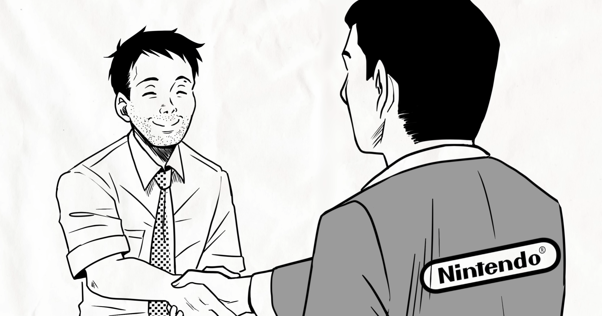
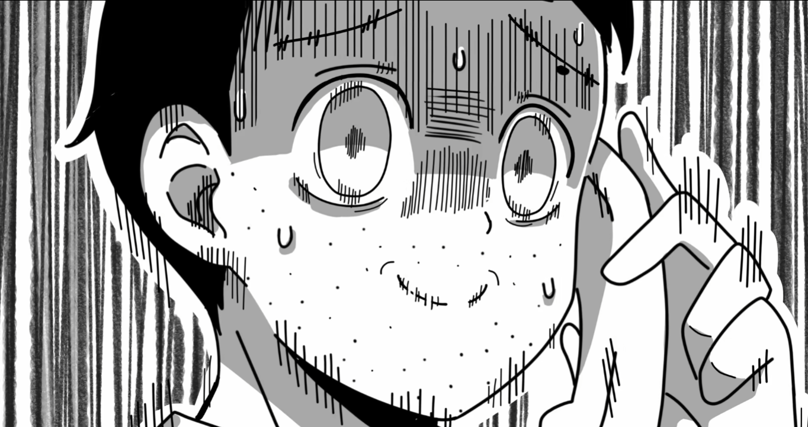
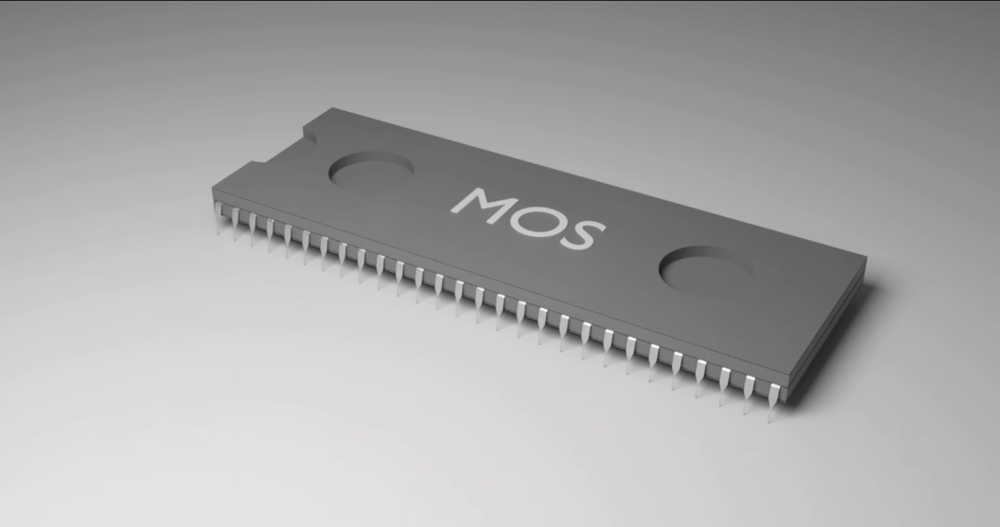
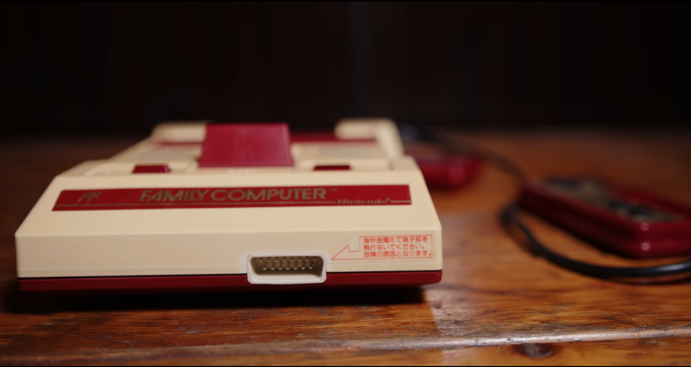

Un Inicio de casualidades
Conozcamos a Masayuki Uemura él era un simple ingeniero de Sharp y había sido robado por Nintendo y le dieron la directiva de R&D2 (Investigación y desarrollo 2) y tuvo algunos exactos como el color tv-game pero mientras este salía era eclipsado por el Game&Watch. |  |
|  | Estos equipos R&D1 y R&D2 no se llevaban para nada bien estos competían por ver cuál era el mejor cosa que por el Game&Watch R&D1 varios del equipo de Uemura se iban para el equipo “enemigo” hasta que se le vino una idea de la nada a Hiroshi Yamauchi (Hablamos de el en la primera parte ) se le ocurrió una idea sobre un equipo de videojuego fuera de las arcades y que pueda estar en cada sala de cada hogar a y le dijo que este debería costar unos 10 000 yenes(44 dólares) y estar listo en menos de 1 año y todo se lo encargo a Uemura este por un intento de no ser desplazado u otra vez eclipsado acepto el proyecto y así sería el comienzo de la family computer (Nintendo). |
Con el proyecto entre manos Uemura busco alguna empresa que le ayudara hacer los procesadores estas empresas lo botaban constantemente y justo antes de darse por vencido llego una empresa de impresoras llamada Ricoh esta había abierto su división de microprocesadores y estaban al borde de la quiebra necesitaban un trato el que sea para sacarlo de apuro y hicieron un trato con Uemura pero la fabricaría con un MOS 6502(Chip de Chuck) si un chip de la competencia commodore sería el corazón de Nes.. |  |
|  | Pero ahora faltaba un nombre y un diseño Uemura se tragó su orgullo y pidió ayuda a R&D1 y a su directo Gunpei Yokoi este le ayudo con el D-pad y el nombre la esposa de Uemura dio con el nombre exacto Family Computer asi atrayendo a la mayoría de padres por el nombre y el bonito diseño , sin duda todo fue una odisea para Uemura que ahora si no pudo ser eclipsado con este proyecto y family computer ( Nintendo En America y Europa) hizo a pocisionar a Nintendo como una compañía de videojuegos abandonando totalmente los juguetes y cartas de donde se originó la empresa. |